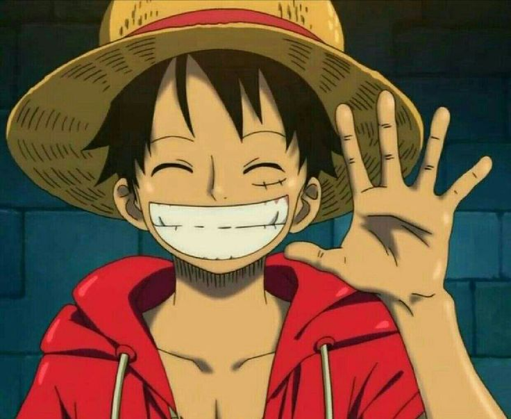
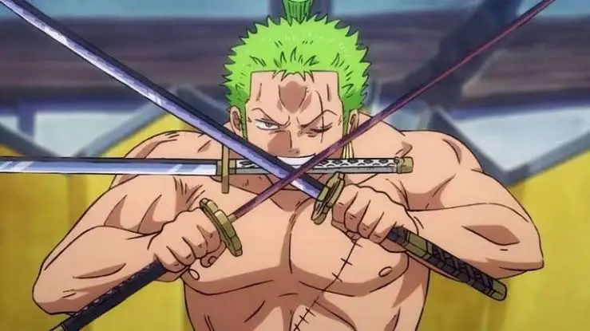
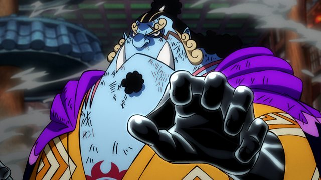
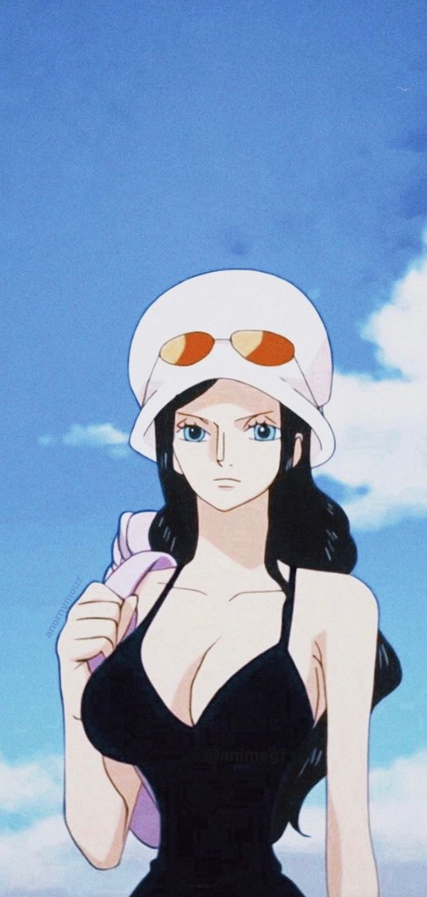
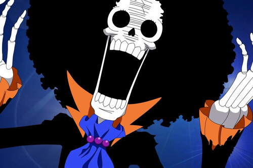
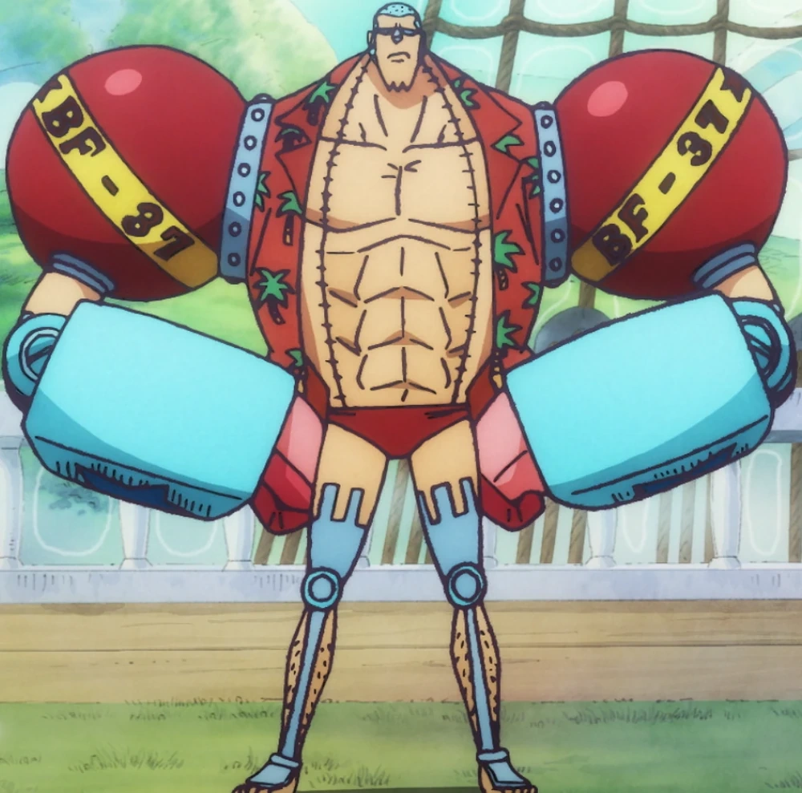
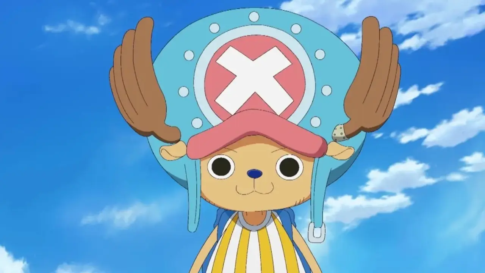

Este es Monkey D. Luffy. Es el protagonista del famosisimo anime One Piece. El cual trata de un niño cuyo proposito es llegar a ser el rey de los piratas y va formando su banda poco a poco y haciendo el bien ayudando a la gente con las injusticias del gobierno mundial
Miembros de la banda:
- Luffy(Capitan de la banda)
- Zoro(Espadachin)
- Sanji(Cocinero)
- Jimbei(gyojin y ex shichibukai)
- Nico Robin(Arqueologa)
- Nami(Navegante)
- Brook(Musico)
- Franky(Carpintero del barco)
- Chopper(Medico)
- Usopp(Francotirador)








Página de Pableras355(Pablo Campos) © 2025